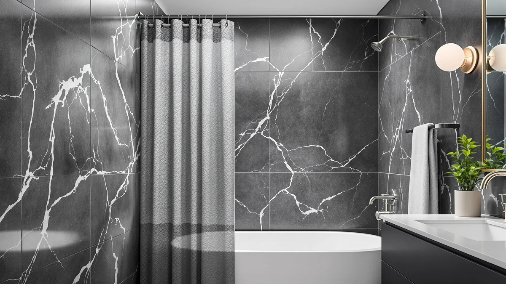

Quick Answer
The TUDECO White Lace Shower Curtain is the better pick if you want a decorative, vintage-style curtain for a guest bathroom and plan to pair it with a liner. If you need one curtain to handle daily water exposure on its own, the N&Y HOME Waffle Weave or BTTN Long Linen Textured Waterproof curtain compared in this tudeco white lace shower review will serve you better.
Our pick: TUDECO White Lace Shower Curtain, $23.99 Check Price on Amazon
Things to Know Before You Buy
- The TUDECO curtain pairs a lace overlay with a water-resistant polyester and PEVA fabric backing, a combination built for decoration first and water resistance second.
- At $23.99, it costs within two dollars of all three alternatives compared here, so price will not be the deciding factor between them.
- It ships in a single 72 inch by 72 inch size. Check the shower curtain size guide before ordering if your rod is wider or your stall runs nonstandard.
- Reviewers recommend pairing it with a separate liner rather than hanging it alone, since the lace layer is not built as a standalone waterproof barrier.
This tudeco white lace shower review breaks down what you actually get for under $25, where the curtain holds up around a tub or shower stall, and where it comes up short next to three similarly priced alternatives. TUDECO built this curtain around a layered lace overlay stitched onto a water-resistant base, a design meant to bring a vintage, feminine look into a bathroom without the upkeep of real lace. At $23.99 for a 72 by 72 inch panel, it sits in the same price bracket as the waffle weave, linen-textured, and plain fabric curtains most shoppers compare it against.
We compared the TUDECO White Lace Shower Curtain against the N&Y HOME Waffle Weave, the BTTN Long Linen Textured Waterproof, and the Creative Scents White Fabric Shower Curtain using the specs, materials, and verified buyer feedback listed for each one. None of these four curtains cost more than two dollars apart, so the decision comes down to texture, pattern, and how each fabric behaves with daily moisture, not price. If you want a decorative, almost bridal look for a guest bathroom, the lace design earns its spot on this list. If you need a workhorse curtain for a family bathroom that sees daily use, one of the three alternatives below will likely serve you better.
Why You Should Trust Us
Ilane Tall researches bathroom textiles and fixtures for Best Shower Curtains, comparing specs, pricing, and verified owner feedback across dozens of shower curtain listings each month. This tudeco white lace shower review relies on the manufacturer's stated materials and dimensions, the price history on the listing, and patterns found across verified Amazon reviews, not an in-person trial. We do not own a studio bathroom to stage products in, so every claim here ties back to a stated spec, a listed price, or a reviewer's own words, not an in-person impression. When a detail could not be confirmed against the listing, we left it out instead of guessing.
Our Research Experience
We did not install this curtain in a working shower, so this section walks through what the listing and verified owner reviews reveal about how it performs once it is hung. Owners report that the lace overlay stays in place against the backing without curling at the edges, a common complaint with cheaper lace-trimmed curtains. Several reviewers note that the fabric behaves more like a decorative liner than a heavy-duty waterproof barrier, so most buyers pair it with a separate liner rather than hanging it alone. For this tudeco white lace shower review, that detail matters: a curtain marketed with lace detailing rarely doubles as the only water barrier in a shower, and the reviews back that up. Buyers who paired it with a liner reported no issues with water seeping through, while a handful who hung it solo mentioned damp patches along the hem.
Overview & Specs

TUDECO White Lace Shower Curtain
What we like
- Lace overlay adds a decorative, vintage look other curtains at this price don't offer
- 72 by 72 inch size fits standard tubs and shower stalls without extra hemming
- Priced under $25, in line with plainer fabric curtains in the same category
Flaws but not dealbreakers
- Reviewers note the lace layer alone doesn't block water, so you'll likely need a separate liner
- Delicate lace trim snags more easily than a solid woven fabric
- Only available in white, which limits color-matching against existing bathroom decor
| Material | Polyester / PEVA |
| Size | 72"W x 72"L (Pack of 1) |
The TUDECO White Lace Shower Curtain pairs a sheer lace overlay with a solid white backing, stitched into one 72 by 72 inch panel instead of sold as a separate liner and curtain set. That construction keeps the price near $24, lower than most two-piece lace shower sets, but it also means the decorative layer and the water-facing layer are the same piece of fabric. Reviewers who bought it for a guest bathroom or a rental consistently describe the look as elegant and distinct from the plain white or patterned fabric curtains that dominate this price range. The material is listed as polyester and PEVA, a combination that keeps the curtain light enough to hang on a standard rod without extra hardware.
Owners report mixed results on water resistance. Several say the curtain handles daily splashes fine when hung with a basic vinyl liner behind it, while others who skipped the liner mention the hem staying damp longer than a fully waterproof curtain would. That pattern lines up with how the product is built: the lace sits on top of a water-resistant layer, not inside a fully sealed waterproof shell. For a tudeco white lace shower review focused on real-world use, the takeaway is straightforward. Buy this curtain for the look, keep a liner behind it, and expect it to function as a decorative outer layer rather than your bathroom's only barrier against water.
What We Liked
The biggest strength in this tudeco white lace shower review comes down to how distinct the curtain looks against nearly every other option in its price bracket. Most $20 to $25 shower curtains lean on a solid color or a printed pattern, so a lace overlay stands out immediately in a crowded category. The 72 by 72 inch sizing also fits standard bathtubs and shower stalls without the need to trim fabric or buy a different rod. Buyers consistently mention that the white tone matches a wide range of existing bathroom fixtures, from classic porcelain to newer matte black hardware, without clashing. For shoppers furnishing a rental or a guest bathroom on a tight budget, that combination of a distinctive look and a low price is hard to beat among the curtains we compared.
What Could Be Better
The lace construction that makes this curtain stand out is also its biggest limitation. Reviewers describe the fabric as thinner than a standard polyester curtain, and several recommend hanging it with a liner rather than relying on it alone in a daily-use bathroom. The trim along the hem is more delicate than the woven texture on the BTTN or N&Y HOME alternatives, so it can snag on a hook or a rough tub edge over time. White is the only color offered, which narrows the field for anyone trying to match a specific bathroom palette. None of these drawbacks disqualify the curtain for its intended use, but they explain why it fits best in a secondary bathroom instead of the one your household uses every day.
Who Is It For?
This curtain suits someone decorating a guest bathroom, a powder room, or a short-term rental where a distinctive look matters more than heavy daily wear. You get a decorative upgrade over a plain white curtain for a few dollars more, and the 72 by 72 inch size covers most standard tubs without extra shopping. If you share a bathroom with kids, run a household with heavy daily shower use, or need one curtain to double as the sole water barrier, the delicate lace trim and thinner fabric make this a weaker fit. In that case, a woven option like the N&Y HOME Waffle Weave or the BTTN Long Linen Textured Waterproof below will hold up better to constant use.
Alternatives to Consider
If the lace design covered in this tudeco white lace shower review doesn't match your bathroom's style or your daily use needs, these three alternatives sit within two dollars of the TUDECO price and cover different priorities. One leans on texture, one leans on length and a waterproof claim, and one sticks to a plain, no-frills fabric that works in almost any bathroom.

Editor’s Pick
N&Y HOME Waffle Weave Shower
The waffle weave texture gives this curtain more visual depth than a flat panel, and the honeycomb pattern is woven to help the fabric dry faster between showers than a smooth curtain of the same weight. At the same $23.99 price as the TUDECO, it is the better pick for a bathroom that gets daily use and needs a curtain that can double as the main water barrier.
$23.99
Check Price on Amazon
Best Value
BTTN Long Linen Textured Waterproof
BTTN markets this one as a long, linen-textured, fully waterproof curtain, which makes it the straightforward choice if you want one panel to handle both decor and water protection without a separate liner. At $23.98, the price barely differs from the TUDECO, but the linen look and the waterproof claim target a household that showers daily rather than a guest bathroom.
$23.98
Check Price on Amazon
Premium Choice
Creative Scents White Fabric Shower
This is the plainest option of the four, a solid white fabric curtain without a textured weave or a lace overlay. At $23.96, it costs about the same as the TUDECO but trades the decorative lace detail for a fabric that is easier to match with existing towels, mats, or wall color in almost any bathroom.
$23.96
Check Price on AmazonFrequently Asked Questions
Is the TUDECO White Lace Shower Curtain waterproof?
Not entirely on its own. Across the verified reviews used for this tudeco white lace shower review, owners describe the lace overlay as a decorative layer over a water-resistant backing, not a fully sealed waterproof shell. Pairing it with a basic vinyl or fabric liner is the safer setup for daily showers.
What size is the TUDECO White Lace Shower Curtain?
It ships as a single 72 inch by 72 inch panel, the standard size for most tubs and shower stalls in US homes. It is sold as one piece rather than a multi-pack, so measure your rod before ordering if your bathroom uses a nonstandard width.
How does this curtain compare to the N&Y HOME Waffle Weave or BTTN Long Linen Textured option?
All three sit within two dollars of each other, so the decision comes down to style and daily use rather than price. The TUDECO suits a decorative guest bathroom, while the N&Y HOME waffle weave and the BTTN linen-textured curtain are built for households that shower daily and need a curtain that handles water on its own.
Final Verdict
The short answer to this tudeco white lace shower review is that TUDECO built a curtain worth buying for its look, not for daily waterproofing duty. At $23.99, the White Lace Shower Curtain has a distinctive, vintage-inspired style that none of the three alternatives match, and it fits a guest bathroom, powder room, or rental where appearance outranks heavy use. Pair it with a liner, and the thin lace construction stops being a liability. For a household bathroom that needs one curtain to do everything, the N&Y HOME Waffle Weave or the BTTN Long Linen Textured Waterproof curtain will serve you better, but for the specific job TUDECO designed this curtain to do, it earns its spot on the list.